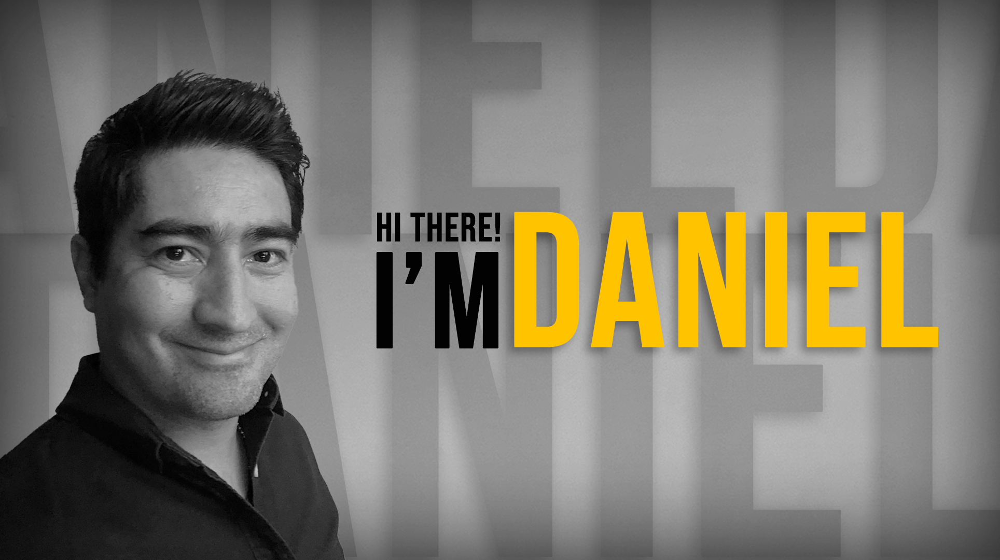
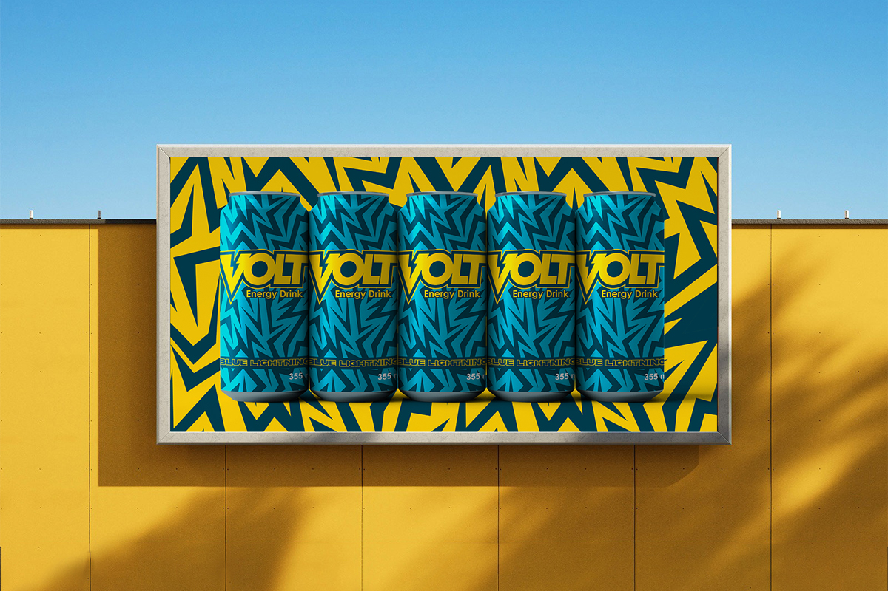
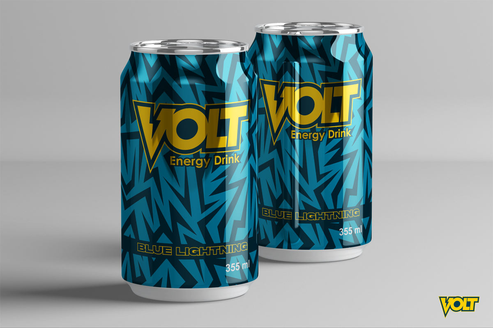
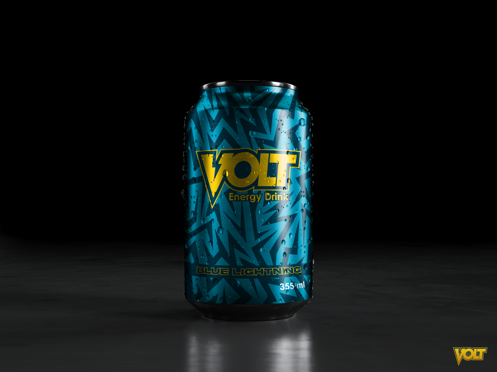

Daniel Ibarra | Portafolio Website Project








DANIEL IBARRA
Hello, I’m Daniel Ibarra, a graphic designer and creative with a deep passion for telling visual stories that connect, inspire, and transform. My work stems from a constant search to balance functionality and aesthetics, always placing the user and their experience at the center of the process.
Since I can remember, I’ve always felt an attraction to Graphic Design and Visual Arts. Although life led me to study marketing, my passion for design and visual arts has remained constant in my daily life.
From the beginning, I have explored different areas of design: branding, packaging, editorial design, motion graphics, logo creation, typography, industrial design, plastic arts, video editing and VFX, and even web design. With a very clear focus: to create clean, modern, and memorable solutions that reflect the unique essence of each project. I believe design is not just a visual art, but a powerful tool to communicate complex ideas simply and effectively.
Currently, my focus is on projects that blend the classical with the contemporary, always adapting to the specific needs of each client or brand. My goal is to grow as a creative and, eventually, lead comprehensive branding projects on a large scale.
As a designer, I believe that effective design goes far beyond aesthetics: it is the conscious act of solving problems through clear and purposeful visual communication. My approach is based on the principle that every element within a design must have meaning and intention, working together to tell a coherent story that connects with its audience.
I am committed to creating work that balances clarity and beauty, where simplicity does not mean a lack of depth, but rather a refined focus. Good design is a harmonious blend of function and form, created to naturally guide the viewer and enhance their experience.
Innovation is essential, but it must be conscious — not innovation for innovation’s sake, but new ideas grounded in purpose and respect for design traditions. I strive to go beyond with intention, experimenting with typography, composition, and color without losing the integrity of the message.
In my practice, I am constantly learning and adapting to new tools and trends, but always anchored in the timeless principles of design. My goal is to produce work that is both relevant and enduring, designs that connect emotionally and intellectually, and that inspire both clients and audiences alike.